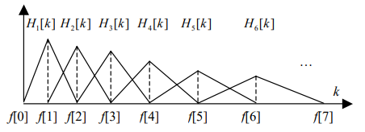

1. Вычисление ДПФ: сигнал разбивается на перекрывающиеся окна размером, соответствующим целой степени двойки, остаток дополняется нулями. $$ X[k] = \frac{1}{N} \sum_{n=0}^{N-1}x[n]e^{-j\frac{2\pi}{N}kn}$$ К каждому фрейму применяется оконная функция.
2. Создание банка треугольных фильтров (M штук): $$H_m[k] = \left\{ \begin{array}{rcl} 0 & \mbox{при} & k < f[m-1]\\ \frac{k - f[m-1]}{f[m] - f[m-1]} & \mbox{при} & f[m-1] \leq k \leq f[m] \\ \frac{f[m+1] - k}{f[m+1] - f[m]} & \mbox{при} & f[m] \leq k \leq f[m+1] \\ 0 & \mbox{при} & k > f[m+1] \end{array}\right. $$ 
Альернативная передаточная функция: $$H_m[k] = \left\{ \begin{array}{rcl} 0 & \mbox{при} & k < f[m-1]\\ \frac{2(k - f[m-1])}{(f[m+1] - f[m-1])(f[m] - f[m-1])} & \mbox{при} & f[m-1] \leq k \leq f[m] \\ \frac{2(f[m+1] - k)}{(f[m+1] - f[m-1])(f[m] - f[m-1])} & \mbox{при} & f[m] \leq k \leq f[m+1] \\ 0 & \mbox{при} & k > f[m+1] \end{array}\right. $$ Точки f[m] расположены на равном расстоянии в мел-шкале. Формула перевода Герц в мелы: $$ B(f) = 1127 ln(1 + \frac{f}{700}) $$ Из мел в Герцы: $$ B^{-1}(f) = 700 (e^{\frac{f}{1127}} - 1) $$ Тогда, частота m-й границы треугольного фильтра в Герцах: $$ f[m] = \frac{N}{f_{sample\_rate}}B^{-1} (B(f_L) + m \frac{B(f_H) - B(f_L)}{M+1}), $$ $$ f_L, f_H - верхняя \hspace{2mm} и\hspace{2mm} нижняя\hspace{2mm} частоты\hspace{2mm} банка\hspace{2mm} фильтров\hspace{2mm} в\hspace{2mm} Гц, N - размер\hspace{2mm} окна\hspace{2mm} ДПФ $$
3. Ищем логарифм энергии каждого фильтра: $$S[m] = ln[\sum_{k=0}^{N-1}{|X_a[k]|^2 H_m[k]}], \hspace{10mm} 0 \leq m \leq M $$
4. Применяем косинусное преобразование: $$c[n] = \sum_{m=0}^{M-1}{S[m]cos(\frac{\pi n (m + \frac{1}{2})}{M})}, \hspace{10mm} 0 \leq n \leq M $$
Ноутбук: MFCC
Открыть в Colab
Открыть на Github
Скачать на устройство